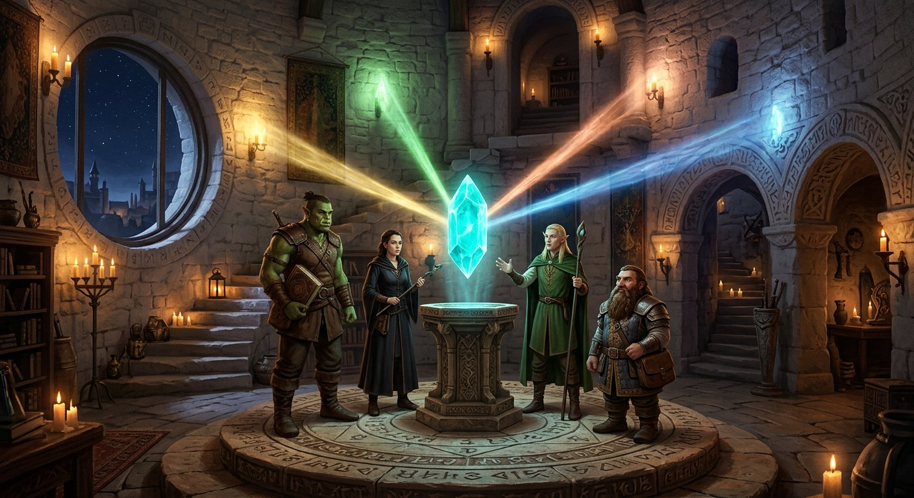

十四势力
点击势力，飞赴其疆域
十四都 · 星槎
城 · 镇 · 村
左键拖拽 旋转 · 滚轮 缩放 · 右键 平移 · 点击城市 查看志书
✦
艾瑟兰
AETHERIA · THREE CONTINENTS, ONE FLOATING ISLE
星陨之下，三块大陆正在苏醒……
── ✦ ──
星槎学院
XINGCHA ACADEMY · 悬于星辉裂隙之上三百丈
拖动旋转 · 滚轮缩放 · 点击建筑读志
渡船正在靠岸
船 票
创立
升空
校长
入学
位置
壹
星槎不是船
贰
一千二百年的来历
叁
四院
台地升空那夜，四个学徒各抱着一根柱子没松手。那四根柱子，后来成了四院的院徽。分选的光落在哪一色上，学生就住在哪一色回廊的尽头。
肆
分选礼

裂隙晶会问一个问题
伍
槎埠时刻 · 摆渡人
陆
星槎七律 · 十四贡
七律
十四贡（束脩）
柒
岛上的日子
仪典
建模札记
────── ✦ ──────
艾瑟兰
AETHERIA · THREE CONTINENTS, ONE FLOATING ISLE
高奇幻 · 剑与魔法
三大陆 · 十四势力 · 四十二城
星辉历 412 年
四河四湖 · 雾沼 · 星槎空岛
壹
创世神话 · 星陨创世
起初，没有大地，没有天空，只有无边无际的虚空之洋。星辉女神艾瑟拉在虚空中行走、歌唱，她的歌声所及之处，海水便从虚空中醒来。那是世界之前唯一的声音。
直到虚空之蛇沃伊德醒来。它与星辉女神缠斗七日七夜，星辰一颗接一颗坠落。第九日黄昏，沃伊德逃回虚心的深处，而女神倒在虚空中，再未站起——她的血与泪化作无数星辰碎片，坠入大海。那便是大星陨。
碎片所沉之处，大地隆起。最大的碎片落在世界中央，至今仍在燃烧，那便是星辉裂隙；较小的碎片散作种子，长成森林、河流，与第一批呼吸着的生灵。碎片里不灭的光，被世界的人称为「星辉」——一切魔法的源头。这片大陆，因此得名艾瑟兰。
贰
纪元年表
叁
地理志
肆
星辉魔法
伍
神器图鉴
陆
名词典
────── ✦ ──────
种族图鉴
《白冠之誓》下，三块大陆为十四势力共有：人类四王一岛，精灵两林，矮人两山，兽人两团，半身人一谷一盟——一影在北方独立的大陆上，隔着暮影海峡守望。以下条目摘自《白冠圣典 · 异族卷》、银叶王国档案馆、灰港商会账册与黑牙堡的战鼓记录。